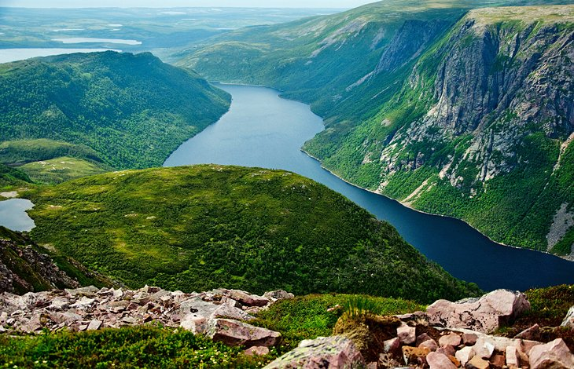
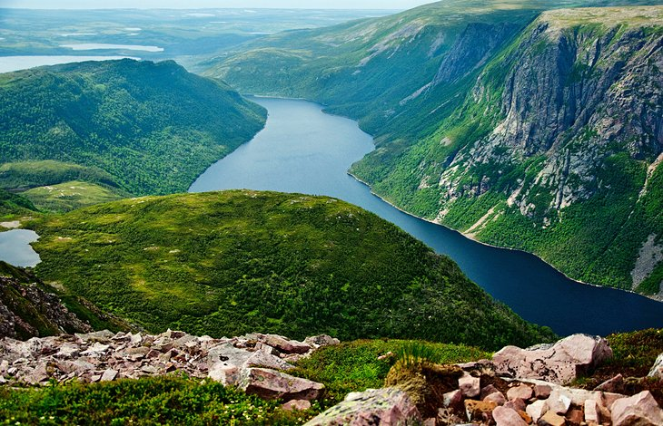

Canada, the second largest country, had a lot of beautiful sceneries, and landscapes. It will be a great experience for a nature lover. I may not know a lot about Canada but based on the pictures available online, I would like to see the clean, and beautiful places in the images.

Niagara Falls had been a famous tourist spot for Canada. It is located an hour's drive from Toronto. These massive falls drop approximately 57 meters. You can see the falls at an astoundingly close distance from several key points. I have not seen a single waterfall in my life personally. I want to see why this fall is very famous.
 


These three places showcase the beauty of the nature that can be found in Canada. Different types of nature are being showcased like mountains, volcanoes, prairies, oceans, rivers, lakes, Arctic tundra's, glaciers, rain forests, deserts, islands, vineyards, valleys, ravines, cliffs, hills, pastoral land, and etc. Most of it is still untouched. I may not know a lot of places in Canada, however after seeing this pictures I would definitely visit Canada if given a chance. The places feels like relaxing, and a work of art, as a nature lover, I would like to gaze at the scenery and take my time relaxing or thinking. Nature can heal a person from their problems.